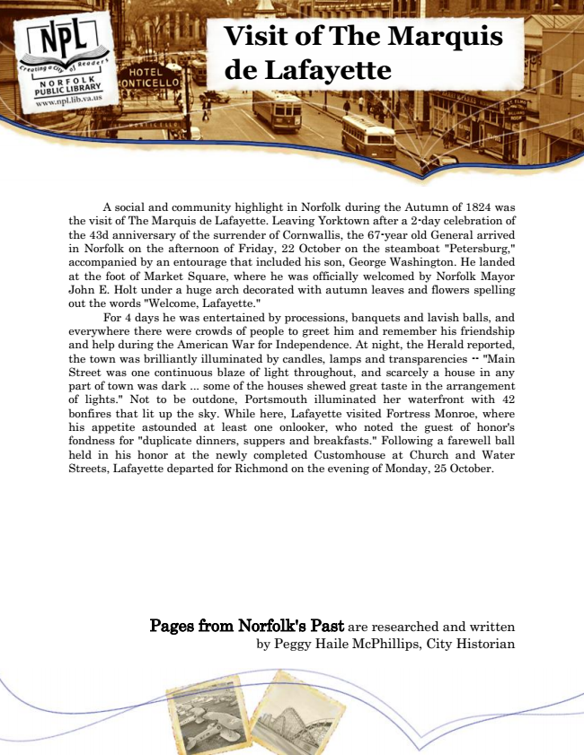

Visit of The Marquis de Lafayette
A social and community highlight in Norfolk during the Autumn of 1824 was the visit of The Marquis de Lafayette. Leaving Yorktown after a 2-day celebration of the 43d anniversary of the surrender of Cornwallis, the 67-year old General arrived in Norfolk on the afternoon of Friday, 22 October on the steamboat "Petersburg," accompanied by an entourage that included his son, George Washington. He landed at the foot of Market Square, where he was officially welcomed by Norfolk Mayor John E. Holt under a huge arch decorated with autumn leaves and flowers spelling out the words "Welcome, Lafayette."
For 4 days he was entertained by processions, banquets and lavish balls, and everywhere there were crowds of people to greet him and remember his friendship and help during the American War for Independence. At night, the Herald reported, the town was brilliantly illuminated by candles, lamps and transparencies -- "Main Street was one continuous blaze of light throughout, and scarcely a house in any part of town was dark ... some of the houses shewed great taste in the arrangement of lights." Not to be outdone, Portsmouth illuminated her waterfront with 42 bonfires that lit up the sky. While here, Lafayette visited Fortress Monroe, where his appetite astounded at least one onlooker, who noted the guest of honor's fondness for "duplicate dinners, suppers and breakfasts." Following a farewell ball held in his honor at the newly completed Customhouse at Church and Water Streets, Lafayette departed for Richmond on the evening of Monday, 25 October.
Pages from Norfolk's Past are researched and written by Peggy Haile McPhillips, City Historian